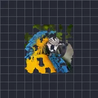

Ruwe randen

Vreet met ruis in de randen van de ondoorzichtige delen, voor een gescheurde, versleten of verbrande omtrek.
Instellingen
| Instelling | Type | Bereik | Standaard |
|---|---|---|---|
| Rand | Getal | 0 tot 300 | 12 |
| Ruwheid | Getal | 0 tot 1 | 0.6 |
| Schaal | Getal | 0.05 tot 20 | 1 |
| Evolutie | Getal | -50 tot 50 | 0 |
| Seed | Getal | 0 tot 5 | 0 |
| Octaven | Getal | 1 tot 9 | 6 |